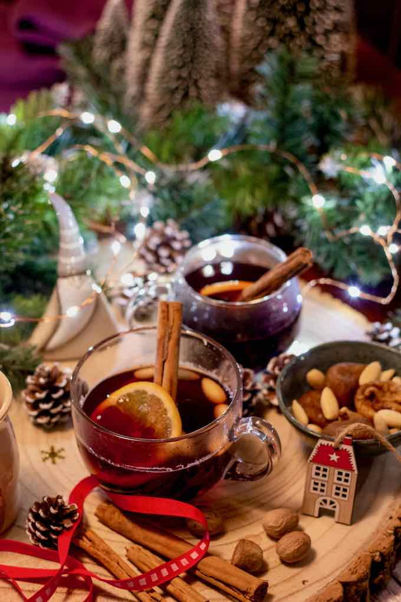

Glögg

Description
Glögg is the Swedish version of mulled wine, but it is not quite the same as mulled wine in other countries as different spices are used and almonds and raisins are always placed in the bottom of the glass before the glögg is added.
Ingredients
- 75 ml vodka
- 2 cinnamon sticks
- 10-20 cloves
- 2-3 pieces of dried ginger
- 1 Tsp cardamom pods
- 3-4 pieces of dried Seville orange peel
- 1 bottle of red wine, any will do
- 1 Tsp vanilla sugar
- 2 Tbsp raisins
- 10-20 almonds, blanched and peeled
Steps
- Pour the vodka into a small jar. Add the cinnamon, cloves, ginger, orange peel, cardamom and raisins (optional). Cover and leave to infuse for at least a day, preferably a week.
- Pour the vodka and spices into a saucepan and add the wine and sugars. Stir and heat until the sugar is dissolved and the mixture is hot but not boiling, about 80ºC (175ºF).
- Leave to cool and then sieve, to remove the spices, and pour into sterilised bottles* and keep until required.
- Heat gently before serving, but don't let it boil.
- Place 2 or 3 raisins and 2 or 3 almonds in the bottom of each glass and top up with glögg.